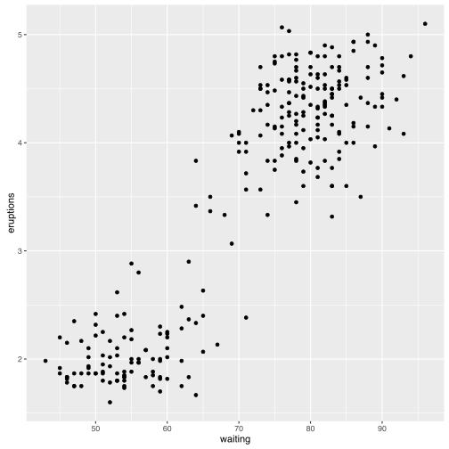
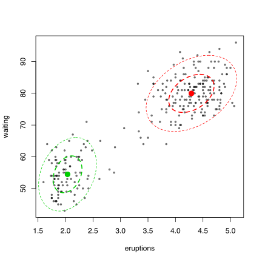
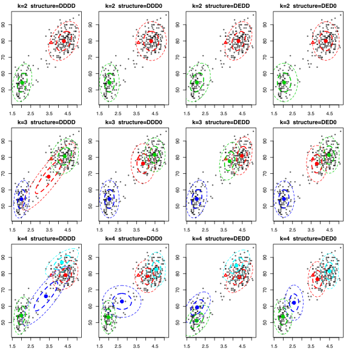
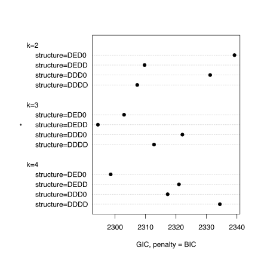

Jak szukać partycji w oparciu o mieszaniny rozkładów?
Omawiane dotąd metody (grupowanie hierarchiczne, k-średnich, k-medoidów) nie bazowały na żadnym probabilistycznym modelu. Ot, dzieliły obserwacje na grupy obiektów bliskich sobie.
W pewnych zastosowaniach praktyczne jest założenie, że obiekty, które obserwujemy pochodzą z mieszaniny rozkładów. Rozłożenie tej mieszaniny na części i zidentyfikowanie wszystkich składowych pozwala nam lepiej zrozumieć naturę obserwowanego zjawiska.
Poniżej skupimy się na mieszaninie rozkładów normalnych, ale w podobny sposób można rozkładać rozkłady również na inne składowe. Trudniej jedynie opisać strukturę zależności.
Przyjmijmy, że mamy rozkładów normalnych o gęstości , dla . Rozkłady mogą różnić się średnią lub macierzą kowariancji . Rozkłady te są zmieszane z prawdopodobieństwami , brzegowa gęstość wynosi więc
Standardowo, parametry takiej mieszaniny estymuje się w oparciu o metodę największej wiarygodności. Maksimum funkcji wiarogodności znajduje się algorytmem expectation–maximization (w skrócie EM, Więcej o tym modelu i algorytmie EM przeczytać można w The R Package bgmm: Mixture Modeling with Uncertain Knowledge https://www.jstatsoft.org/article/view/v047i03).
Przykład
Standardowym przykładem ilustrującym mieszaninę rozkładów normlanych są dane o czasach trwania erupcji i czasach pomiędzy erupcjami gejzera Old Faithful w parku Yellowstone. Już sama wstępna eksploracja tych danych pokazuje zasadność założenia o istnieniu dwóch lub większej liczy grup.
head(faithful)
## eruptions waiting grupy
## 1 3.600 79 2
## 2 1.800 54 1
## 3 3.333 74 2
## 4 2.283 62 1
## 5 4.533 85 2
## 6 2.883 55 1
library(ggplot2)
ggplot(faithful, aes(waiting, eruptions)) +
geom_point()

Wykorzystajmy funkcję unsupervised() z pakietu bgmm do oszacowania parametrów mieszaniny rozkładów normalnych. Załóżmy dwie składowe.
Funkcja plot() narysuje elipsy określające kształt gęstości rozkładów normalnych. Wynikiem jest lista, której elementy pi, mu i cvar przedstawiają wyestymowane parametry.
library(bgmm)
erupcje2 <- unsupervised(X = as.matrix(faithful[,1:2]), k = 2)
plot(erupcje2)

erupcje2$pi
## [1] 0.6441139 0.3558861
# składowa 1
# średnia i macierz wariancji
erupcje2$mu[1,]
## [1] 4.28969 79.96846
erupcje2$cvar[1,,]
## eruptions waiting
## eruptions 0.1699323 0.9401497
## waiting 0.9401497 36.0410392
# składowa 2
# średnia i macierz wariancji
erupcje2$mu[2,]
## [1] 2.036421 54.478841
erupcje2$cvar[2,,]
## eruptions waiting
## eruptions 0.06919325 0.4354348
## waiting 0.43543482 33.6991083
Mając model probabilistyczny, dla każdej obserwacji można określić prawdopodobieństwo przynależności do każdej ze składowych, więc można też wyznaczyć składową MAP (ang. maximum a posteriori).
faithful$grupy <- factor(predict(erupcje2, faithful)$class.X)
## Error in FUN(newX[, i], ...): non-numeric argument to binary operator
ggplot(faithful, aes(waiting, eruptions, color=grupy, shape=grupy)) +
geom_point()

Nieznana struktura, nieznana liczba składowych
Zauważmy, że dla wymiarowych obserwacji, jedna składowa gaussowska opisana jest przez liczb opisujących średnią i opisujących macierz kowariancji. Cały model z składowymi opisany jest przez parametrów. Liczba parametrów szybko rośnie z wymiarem danych, przez co potrzeba jest dużo obserwacji aby je wszystkie dobrze estymować. Jeżeli obserwacji nie ma zbyt dużo, to dobrym rozwiązaniem może być założenie pewnych ograniczeń na postać macierzy kowariancji . Jeżeli założymy, że rozkłady mają taką samą wariancję na każdej składowej, lub nie są skorelowane - znacząco obniżymy liczbę parametrów.
Co gdy nie wiemy jaką wybrać liczbę składowych lub jakie wprowadzić ograniczenia na parametry rozkładu?
W przypadku modeli probabilistycznych użytecznym kryterium może być kryterium Bayesowskie BIC, zdefiniowane jako
gdzie to liczba obserwacji, $|M|$ to rozmiar modelu - liczba parametrów opisujących model a to funkcja log wiarogodności.
Funkcja unsupervisedList() pozwala na dopasowanie do danych zbioru modeli o różnej liczbie składowych i różnej strukturze, a następnie używając funkcji plot() można ete modele porównać organoleptycznie
erupcje <- unsupervisedList(X = as.matrix(faithful[,1:2]), kList = 2:4,
mean = "D", between = c("D", "E"),
within = "D", cov = c("D", "0"))
plot(erupcje)

Lub porównać w oparciu o kryterium BIC. Im niższa wartość kryterium tym lepiej dopasowany model. W tym przypadku najlepszy model według kryterium BIC to ten z trzema składowymi oraz o równych wariancjach i braku kowariancji.
plotGIC(erupcje, penalty = "BIC")

## k=2 k=3 k=4
## structure=DDDD 2307.275 2312.795 2331.745
## structure=DDD0 2331.210 2322.102 2317.286
## structure=DEDD 2309.689 2294.367 2321.467
## structure=DED0 2339.197 2302.955 2298.583
I co dalej?
- Dobrym pakietem do identyfikacji składowych mieszanin gaussowskich to pakiet
mclustomówiony szczegółowo na stronie http://www.stat.washington.edu/mclust/ - Pełny zbiór pakietów do grupowania opartego o mieszaninę rozkładów jest przedstawiony na stronie https://cran.r-project.org/web/views/Cluster.html